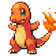

CHARMANDER #004

FOGO
From the time it is born, a flame burns at the tip of its tail. Its life would end if the flame were to go out.It has a preference for hot things. When it rains, steam is said to spout from the tip of its tail.
CHARMELEON #005
FOGO
From the time it is born, a flame burns at the tip of its tail. Its life would end if the flame were to go out.It has a preference for hot things. When it rains, steam is said to spout from the tip of its tail.
CHARIZARD #006
FOGO
From the time it is born, a flame burns at the tip of its tail. Its life would end if the flame were to go out.It has a preference for hot things. When it rains, steam is said to spout from the tip of its tail.